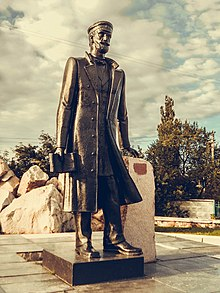
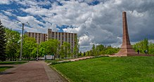

|
Наличие около сотни курганов на месте нынешней Горловки свидетельствует о многочисленных поселениях людей в древнейшие времена, и даёт уникальную возможность исследователям для изучения истории города начиная не с даты основания, а на несколько тысяч лет ранее.  Более известные современной науке казацкие поселения появились в XVII веке, когда запорожцами и беглыми крестьянами Российской империи были основаны хутора вдоль рек Корсунь, Железная и Кодым. Для укрепления границ Российской империи правительство формирует во второй половине XVIII века славяно-сербские поселенческие полки, в состав которых входят сербы, хорваты, словенцы, валахи, сбежавшие от австрийского угнетения, а также украинские и русские крестьяне и казаки. Полки делились на роты, которые основали отдельные поселения на территории современной Горловки. В 1754 году возникает село Государев Байрак (теперь — территория города). В 1776 году зимовники и хутора в балке Сухой Яр и в урочище Жёваный Лес слились в слободу Зайцево, южную часть которой назвали Никитовка (изначально Никитино), в честь одного из её жителей — Никиты Девятилова. В 1795 году в селе Государев Байрак и слободе Зайцево (оба — в черте современной Горловки) насчитывалось 6 514 человек, в слободе Железная в 1884 году — 3 529 жителей. В 1800—1805 годах образовываются хутора Щербиновский, Нелеповский. Возникает слобода Железная. Заселяют её преимущественно переселенцы из Харьковской губернии. В начале XIX века тут были открыты залежи угля, появились крестьянские мелкие шахты. С началом строительства Курско-Харьковско-Азовской железной дороги в 1867 году основан посёлок, одноимённая железнодорожная станция Корсунь (позднее посёлку и станции присвоено имя Горловка), а также каменноугольный рудник, названный Корсунская Копь № 1, состоявший из двух шахт, которые устраивал горный инженер Пётр Николаевич Горлов, заодно разработавший технологию добычи крутопадающих угольных пластов. В 1889 году у посёлка Горловка (находившегося в составе Бахмутского уезда Екатеринославской губернии) промышленником А. Н. Глебовым было открыто месторождение антрацита и началось его освоение. Глебов сумел обратить внимание правительства на громадное значение своих работ, как для донецкого края, так и для всей промышленной России, и получить субсидию в 1,2 млн рублей для возведения металлургических заводов. В 1895 году А. Н. Глебов образовал Государево Байракское-Товарищество, учредителями которого стали, кроме него, его брат Н. Н. Глебов, владелец доломитного завода при станции Никитовка К. Ф. Медвенский, и горный инженер Л. Г. Рабинович. А. Н. Глебов приобрёл у крестьян села Государев Байрак участок земли и построил шахту Святого Андрея. В 1897 году она вошла в строй. В Советское время шахта приобрела новое название — Шахта имени М. И. Калинина.  В 1932 году Горловку планировали сделать административным центром Донбасса, но уполномоченный по этому вопросу Лазарь Каганович, поразившийся непролазной грязи возле шахты «Кочегарка», решил ехать в Юзовку (Сталино). 1934 год. ГОРЛОВКА. (ТАСС). В порядке проведения культурно-бытового похода имени XVII съезда партии осуществлёна идея создания подземного буфета для горняков. В шахте № 1, на глубине 690 метров открыт буфет, который обслуживает холодными завтраками 200 (260) подземных рабочих. Буфет расположен недалеко от ствола шахты. (ист. газета Актюбинская правда № 23(560) от 28 января 1934 г.) Во время оккупации немецкими войсками в ходе Великой Отечественной войны горловские шахты были затоплены отступавшими советскими войсками, оборудование машзавода имени С.М.Кирова было эвакуировано на Урал. На территории Горловки располагались румынские, венгерские, итальянские и германские части. После освобождения в 1943 году на горловских шахтах зародилось движение за восстановление угольных предприятий под руководством Марии Гришутиной под девизом: «Девушки! В забой!». Во время кризиса 2014 года в восточных областях Украины Горловка вошла в состав Донецкой народной республики, здесь с апреля 2014 года располагается штаб И. Безлера. На фоне событий протестных движений на востоке Украины 1 марта 2014 года пророссийский митинг собрал в городе 5 тысяч человек. 14 апреля пророссийские активисты заняли городской совет и подняли флаги России и Донецкой Народной республики. 30 апреля 2014 года город перешёл под контроль ДНР. С 20 июля по 6 сентября 2014 года в городе велись бои между правительственными войсками и повстанцами. Никитовский район города находится на линии разграничения с подконтрольной Украине территорией — Чигари, Шумы и Новгородское стали посёлками городского подчинения города Торецка. |